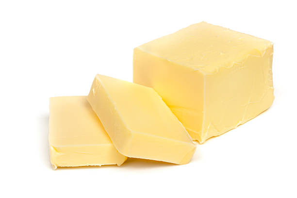

classes of foods
Cabohydrates
Carbohydrates are found in a wide array of both healthy and unhealthy foods—bread, beans, milk, popcorn, potatoes, cookies, spaghetti, soft drinks, corn, and cherry pie. They also come in a variety of forms. The most common and abundant forms are sugars, fibers, and starches. Foods high in carbohydrates are an important part of a healthy diet. Carbohydrates provide the body with glucose, which is converted to energy used to support bodily functions and physical activity. But carbohydrate quality is important; some types of carbohydrate-rich foods are better than others: The healthiest sources of carbohydrates—unprocessed or minimally processed whole grains, vegetables, fruits and beans—promote good health by delivering vitamins, minerals, fiber, and a host of important phytonutrients. Unhealthier sources of carbohydrates include white bread, pastries, sodas, and other highly processed or refined foods. These items contain easily digested carbohydrates that may contribute to weight gain, interfere with weight loss, and promote diabetes and heart disease.
- Beans
- Bread
- Corn
- Milk
- Cookies
Fat and Oil
The animal fats used by humans are butter, suet (beef fat), lard (pork fat), and fish oils. Important vegetable oils include olive oil, peanut (groundnut) oil, coconut oil, cottonseed oil, sunflower seed oil, soybean oil, safflower oil, rape oil, sesame (gingelly) oil, mustard oil, red palm oil, and corn oil. Fats and oils provide more calories per gram than any other food, but they contain no protein and few micronutrients. Only butter and the previously mentioned fish-liver oils contain any vitamin A or D, though red palm oil does contain carotene, which is converted to vitamin A in the body. Vitamins A and D are added to margarines. All natural fats and oils contain variable amounts of vitamin E, the fat-soluble vitamin antioxidant. The predominant substances in fats and oils are triglycerides, chemical compounds containing any three fatty acids combined with a molecule of glycerol. When no double bonds are present, a fatty acid is said to be saturated; with the presence of one or more double bonds, a fatty acid is said to be unsaturated (see the section Essential nutrients: Lipids). Fats with a high percentage of saturated fatty acids, e.g., butter and lard, tend to be solid at room temperature. Those with a high percentage of unsaturated fatty acids are usually liquid oils, e.g., sunflower, safflower, and corn oils. The process of hydrogenation is used by the food industry to convert unsaturated oils to saturated solid fats, which are more resistant to rancidity. However, hydrogenation also causes the formation of trans-fatty acids. These appear to have some of the same undesirable effects on blood cholesterol as saturated fatty acids A small group of fatty acids is essential in the diet. They occur in body structures, especially the different membranes inside and around cells, and cannot be synthesized in the body from other fats. Linoleic acid is the most important of these fatty acids because it is convertible to other essential fatty acids. Linoleic acid has two double bonds and is a polyunsaturated fatty acid. As well as being an essential fatty acid, it tends to lower the cholesterol level in the blood. Linoleic acid occurs in moderate to high proportions in many of the seed oils, e.g., corn, sunflower, cottonseed, and safflower oils. Some margarines (polyunsaturated margarines) use a blend of oils selected to provide a moderately high linoleic acid content.


- Hard Margarines
- Butter
- fatty meats
- Coconut oil
- Avocados
Fibres
Fiber is a type of carbohydrate that the body can’t digest. Though most carbohydrates are broken down into sugar molecules called glucose, fiber cannot be broken down into sugar molecules, and instead it passes through the body undigested. Fiber helps regulate the body’s use of sugars, helping to keep hunger and blood sugar in check. Children and adults need at least 25 to 35 grams of fiber per day for good health, but most Americans get only about 15 grams a day. Great sources are whole grains, whole fruits and vegetables, legumes, and nuts. Soluble fiber, which dissolves in water, can help lower glucose levels as well as help lower blood cholesterol. Foods with soluble fiber include oatmeal, chia seeds, nuts, beans, lentils, apples, and blueberries. Insoluble fiber, which does not dissolve in water, can help food move through your digestive system, promoting regularity and helping prevent constipation. Foods with insoluble fibers include whole wheat products (especially wheat bran), quinoa, brown rice, legumes, leafy greens like kale, almonds, walnuts, seeds, and fruits with edible skins like pears and apples.

- Brocolli
- Broccoli is a rich source of vitamins, minerals, and antioxidants. Antioxidants can help prevent the development of various conditions. The body produces molecules called free radicals during natural processes such as metabolism, and environmental stresses add to these. Free radicals, or reactive oxygen species, are toxic in large amounts. They can cause cell damage that can lead to cancer and other conditions.
- Apples
- Apples are high in fiber, vitamin C, and various antioxidants. They are also very filling, considering their low calorie count. StudiesTrusted Source showTrusted Source that eating apples can have multiple benefits for your health. Usually eaten raw, apples can also be used in various recipes, juices, and drinks. Various types abound, with a variety of colors and sizes.
- Avocado
- Avocado, (Persea americana), also called alligator pear, tree of the family Lauraceae and its edible fruit. Avocados are native to the Western Hemisphere from Mexico south to the Andean regions and are widely grown in warm climates. Avocado fruits have greenish or yellowish flesh with a buttery consistency and a rich nutty flavour. They are often eaten in salads, and in many parts of the world they are eaten as a dessert.
- Berries
- Berry, in botany, a simple fleshy fruit that usually has many seeds, such as the banana, grape, and tomato. As a simple fruit, a berry is derived from a single ovary of an individual flower. The middle and inner layers of the fruit wall often are not distinct from each other. Together with drupes and pomes, berries are one of the main types of fleshy fruits.
- Potatoes
- Potato, (Solanum tuberosum), annual plant in the nightshade family (Solanaceae), grown for its starchy edible tubers. The potato is native to the Peruvian-Bolivian Andes and is one of the world’s main food crops. Potatoes are frequently served whole or mashed as a cooked vegetable and are also ground into potato flour, used in baking and as a thickener for sauces. The tubers are highly digestible and supply vitamin C, protein, thiamin, and niacin.